Lookout Landing & Purah (Đến Lookout Landing, gặp Purah)
Sau khi rời Đền Thờ Thời Gian, bạn rơi xuống đồng bằng Trung Tâm Hyrule. Cứ đi theo con đường lớn, nhìn cột sáng và toà tháp canh giữa bản đồ là tới Lookout Landing. Lính gác chỉ bạn tới toà nhà có chiếc kính viễn vọng lớn, nơi Purah đang làm việc. Nói chuyện với Josha trước rồi vào gặp Purah để xem đoạn cắt cảnh.
Purah giao bạn lên Lâu Đài Hyrule tìm Đội Trưởng Hoz: nhiệm vụ chính To the Kingdom of Hyrule hoàn thành, Crisis at Hyrule Castle bắt đầu. Trước khi đi, ghé khu tàn tích rơi xuống ngay trong trại — có Steward Construct đổi đồ và mấy thùng nguyên liệu.
Xem ảnh (7)


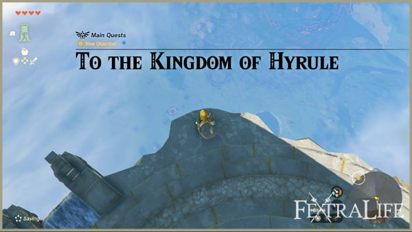
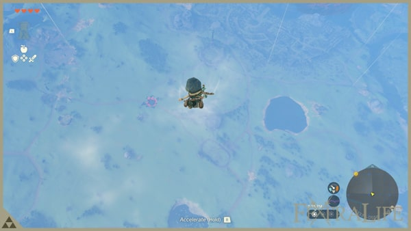
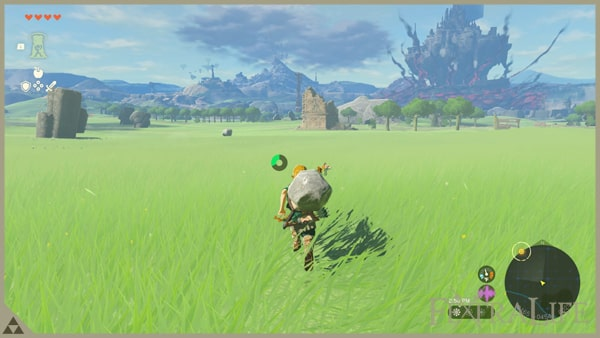
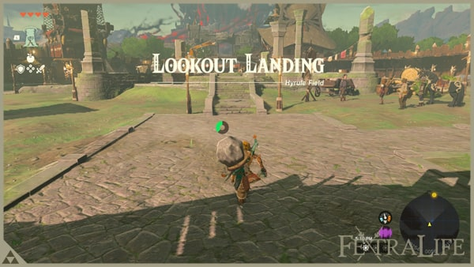
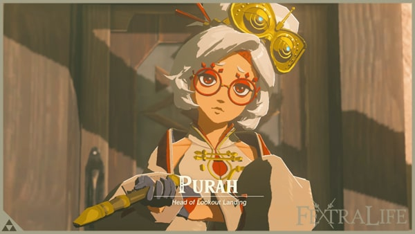
Hyrule Castle & Captain Hoz (Lâu Đài Hyrule và Đội Trưởng Hoz)
Lâu Đài Hyrule nằm ngay phía Bắc Lookout Landing. Đi vòng qua cổng để vào, theo lối chính lên phần nền cao của lâu đài. Tới First Gatehouse thì nhặt thanh kiếm và Giáo Lính, dùng Xuyên lên khu phía trên.
Đội Trưởng Hoz đang đứng quan sát từ mỏm đá. Lại gần thì đoạn cắt cảnh chạy: Zelda hiện ra giữa không trung, loé sáng rồi biến mất, Hoz và binh lính sững người. Đây là mốc mở nhiệm vụ Crisis at Hyrule Castle.
Xem ảnh (9)
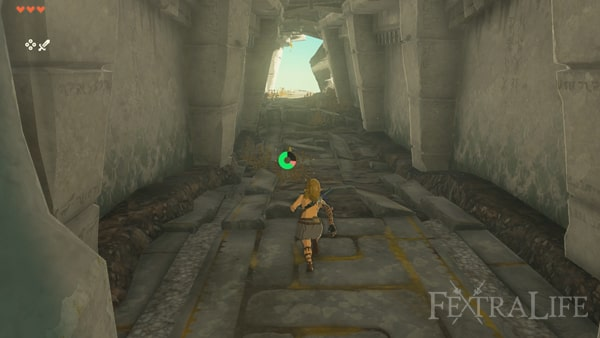
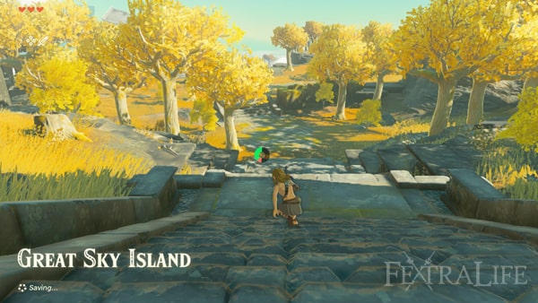

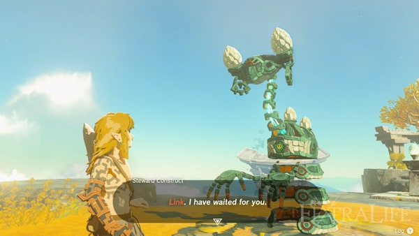
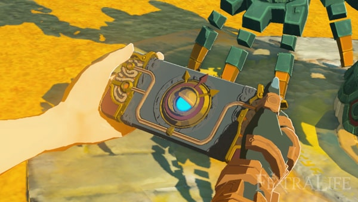


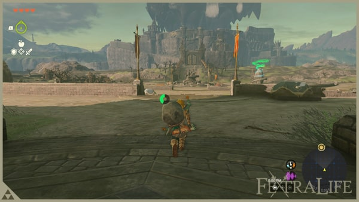
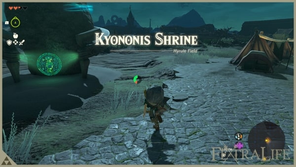
Lookout Landing Skyview Tower & Paraglider (Tháp Quan Sát và Dù Lượn)
Dịch chuyển nhanh về Lookout Landing, báo lại cho Purah. Cô ấy nói muốn điều tra các vùng lân cận thì phải có dữ liệu bản đồ, mà Purah Pad của bạn vẫn trống. Cả trại thức trắng dựng lại Tháp Quan Sát. Trong lúc chờ, vào Hầm Trú Ẩn để nấu ăn, ngủ lấy lại máu và mua thêm đồ ở tượng Nữ Thần.
Sáng hôm sau tháp đã sẵn sàng. Mua Áo Hylian và Mũ Trùm Hylian nếu đủ Rupee, nói chuyện với Purah để xem cảnh mọi Tháp Quan Sát trên mặt đất được kích hoạt. Đứng vào bệ, kích hoạt tháp rồi phóng lên trời: bản đồ mặt đất và bản đồ trời được cập nhật, đồng thời bạn nhận Dù Lượn — từ đây có thể nhảy từ trên cao và mở dù để lượn xa.
Purah giao nhiệm vụ chính Regional Phenomena: điều tra hiện tượng lạ ở bốn vùng. Đây là chuỗi nhiệm vụ dài nhất game vì mỗi vùng lại có mạch nhiệm vụ chính riêng.
Xem ảnh (6)


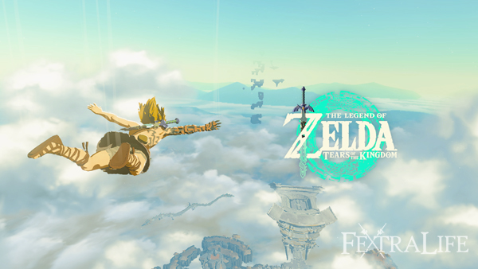
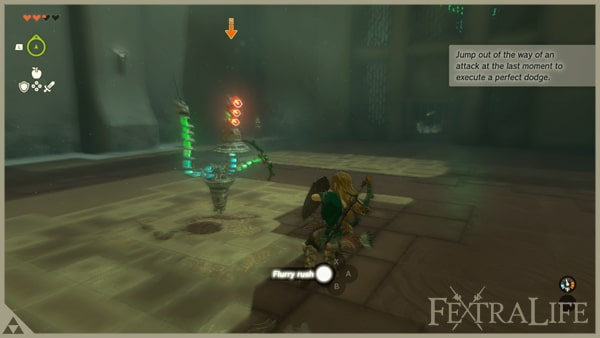
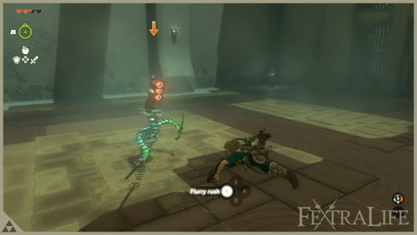
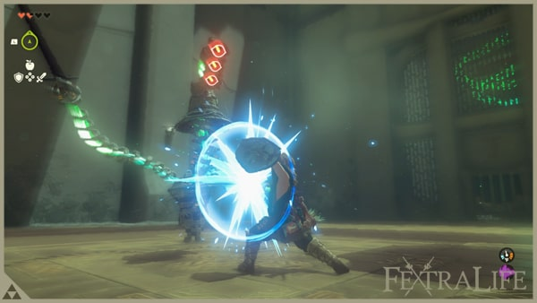
Gloom and Daval (U Ám và Daval)
Quanh Lookout Landing có một hố lớn đang trào chất đỏ sền sệt — đó là U Ám. Đừng dẫm lên: U Ám rút cạn tim của bạn và không hồi lại bằng cách thường, muốn lấy lại phải về tượng Nữ Thần hoặc ăn món có ánh sáng.
Nói chuyện với Daval đứng gần miệng hố, anh ta giải thích U Ám lan từ dưới Vực Sâu lên và chỉ cách nhận biết vùng đất đã bị nhiễm. Ghi nhớ đặc điểm này vì các vùng sau, nhất là dưới Vực Sâu, U Ám xuất hiện dày đặc.
Xem ảnh (3)
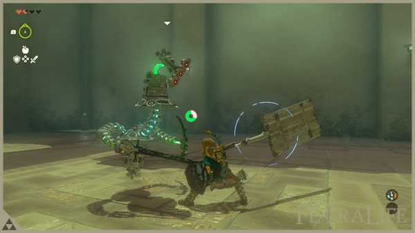
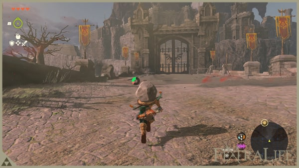
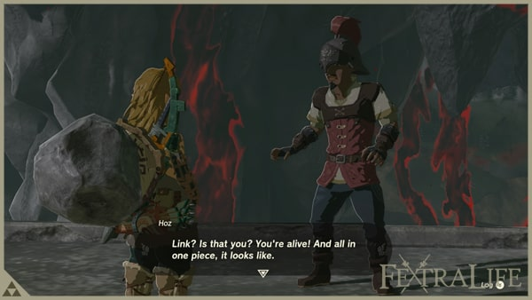
Jiosin Shrine (Đền Thờ Nhỏ Jiosin)
Đền này dạy những động tác chiến đấu cơ bản, chỉ có hai bài giải đố nhưng đáng làm kỹ vì bạn sẽ dùng suốt cả game. Trước khi vào, nhặt thanh Đại Kiếm Gỉ và Khiên Gỉ dựng bên ngoài.
Bài một: né ngang đúng lúc đòn của Captain Construct I sắp chạm — màn hình chuyển sang Ngưng Thời Gian, bấm đòn để kích hoạt Liên Hoàn Kích. Bài hai: lùi lại thay vì né ngang, canh đúng nhịp để Né Hoàn Hảo rồi Liên Hoàn Kích.
Bài ba: giơ khiên và đỡ đúng lúc để bật đòn ra. Bài bốn: giữ nút đánh để tích lực, thanh thể lực chuyển thành thanh tích, nhả ra khi đầy để tung đòn nặng. Xong cả bốn bài là hạ được Captain Construct; chạm bàn thờ nhận Ánh Sáng Chúc Phúc và mở điểm dịch chuyển nhanh. Cứ luyện Né Hoàn Hảo và Liên Hoàn Kích cho thuần, đa số trận sau sẽ thành dễ.
Xem ảnh (2)
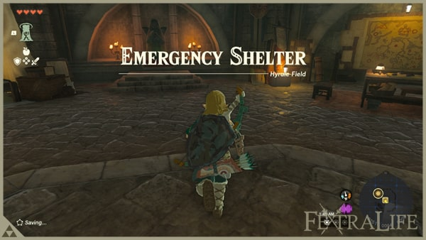
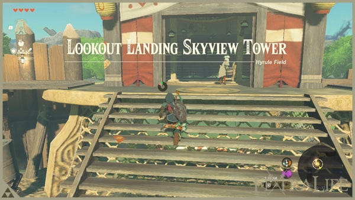
Camera Work in the Depths (Ghi Hình Trong Vực Sâu)
Trước khi đi các vùng khác, hãy hoàn thành nhiệm vụ này. Xuống phòng dưới của Purah, nói chuyện với Robbie và Josha: họ cần bạn chụp ảnh dưới Vực Sâu. Đi theo điểm đánh dấu tới Hố Sụt Hyrule Field ở phía Nam Lookout Landing. Nhớ làm Đền Thờ Nhỏ Jiosin trước để có điểm dịch chuyển khi quay lên.
Nhảy xuống hố, mở Dù Lượn để giảm tốc và tránh vệt U Ám. Vực Sâu tối om nên cần 3-5 Hạt Sáng: ném xuống đất rồi đánh cho vỡ, hoặc ghép vào mũi tên bắn đi. Gặp Ponnick, kích hoạt Rễ Sáng Nisoij để mở bản đồ vùng này. Đi về phía Tây, né U Ám, dọn các cứ điểm Bokoblin và Moblin bị nhiễm rồi kích hoạt Rễ Sáng Iayusus.
Quay lại chỗ Robbie, nói chuyện để mở Camera trong Purah Pad. Chụp bức tượng giơ tay gần đó, rồi về Lookout Landing đưa ảnh cho Josha — bạn nhận 5 Zonaite. Nhiệm vụ Camera Work in the Depths hoàn thành.
Xem ảnh (10)
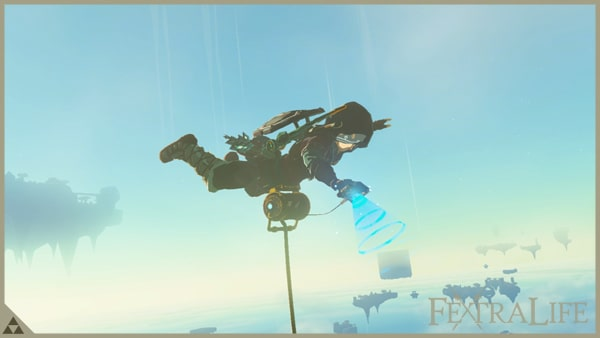
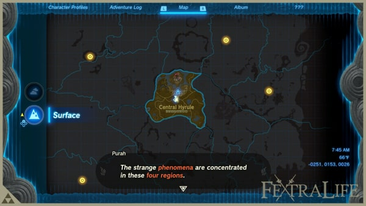
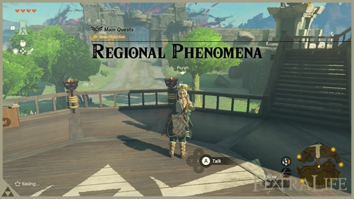
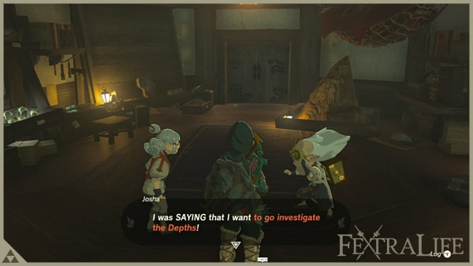
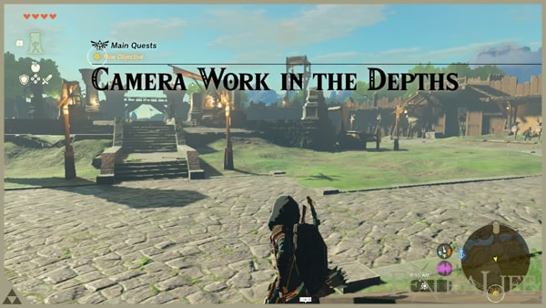
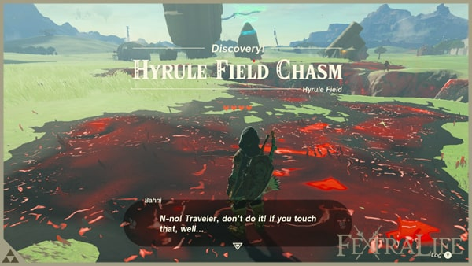
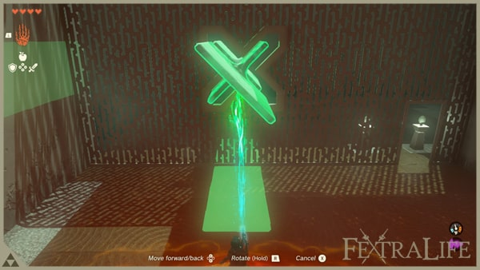
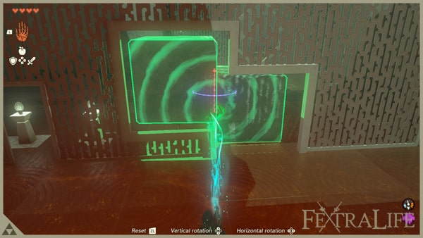
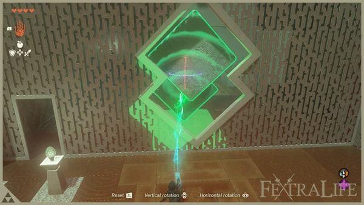
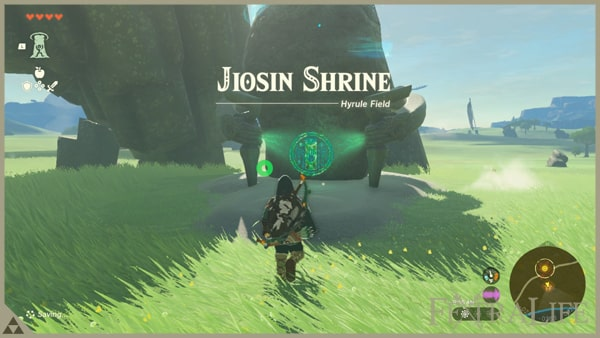
Photographing the Statue (Chụp tượng và trả nhiệm vụ)
Mở Camera trong Purah Pad rồi căn khung vào bức tượng giơ tay. Giữ máy ổn định, chỉnh zoom và chụp khi khung chuyển màu — ảnh đạt yêu cầu sẽ được đánh dấu trong album.
Mang ảnh về Lookout Landing cho Josha để nhận 5 Zonaite và mở khoá toàn bộ chức năng Camera. Từ đây bạn có thêm công cụ chụp ảnh, rất tiện khi cần ghi lại vị trí rương hoặc địa điểm lạ.
Xem ảnh (9)
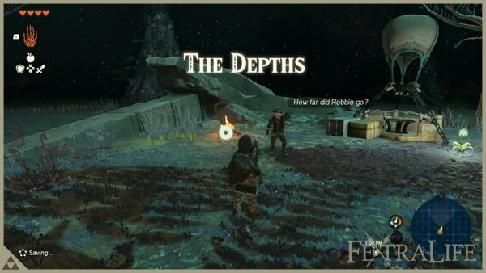
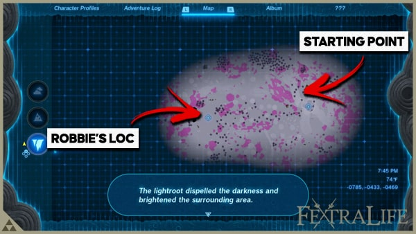
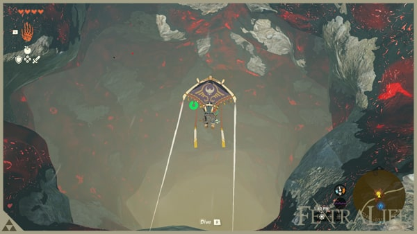
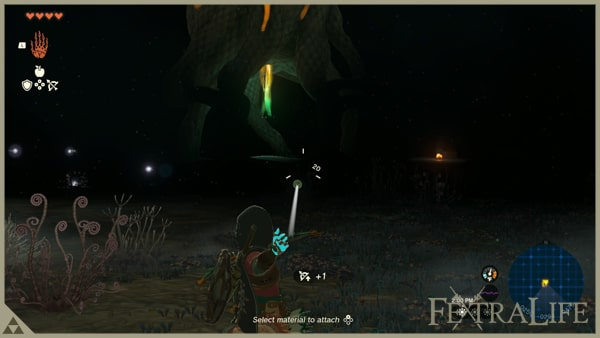
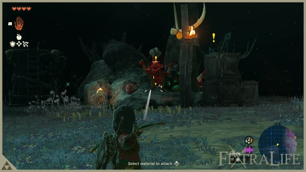
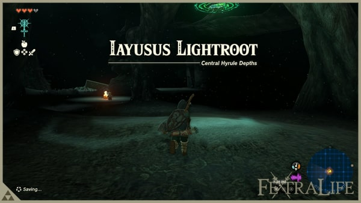
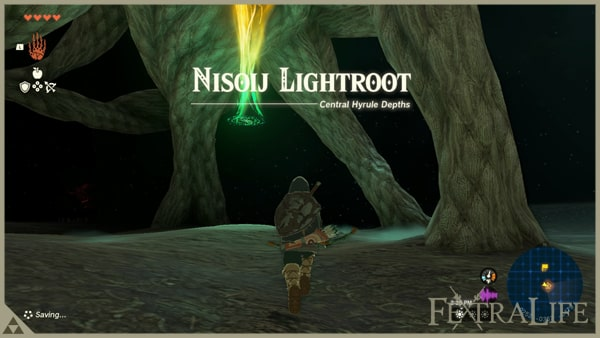
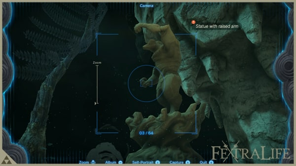
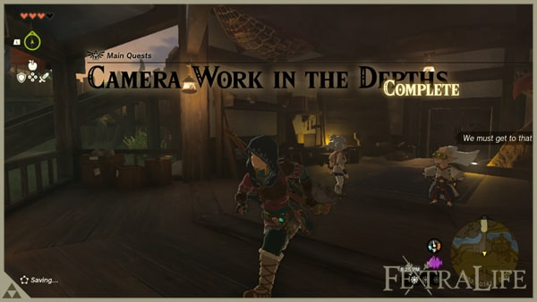
Impa and the Geoglyphs (Impa và Hình Vẽ Mặt Đất)
Impa đang đứng trên bệ đá cạnh đống lửa trại phía Đông Lookout Landing. Nói chuyện để mở nhiệm vụ chính Impa and the Geoglyphs: bà nhờ bạn tìm các hình vẽ mặt đất rải khắp Hyrule.
Sửa chiếc Khinh Khí Cầu gần đó bằng cách gắn quạt Zonai vào bệ, rồi lượn qua hình vẽ trên đồng để tìm vũng nước ở giữa. Nhảy xuống đúng vũng nước sẽ mở Ký Ức: Zelda đứng cùng Vua Rauru và Hoàng Hậu Sonia.
Impa cắt ngang đoạn ký ức và nhận ra đây là manh mối lớn — bà giao tiếp nhiệm vụ chính The Dragon's Tears: tìm đủ các Giọt Lệ Rồng để xem trọn chuỗi ký ức quá khứ.
Side Stops around Lookout Landing (Các việc phụ quanh Lookout Landing)
Dùng Xuyên lên tảng đá lớn giữa đồng rồi nhặt đá trên đỉnh để tìm Hạt Korok. Quanh đồng có bụi Quả Lửa, hái sẵn vài quả vì rất tiện để đốt dây leo và làm mồi lửa.
Nói chuyện với Suzuna gần trại, cô ấy đưa bạn Thuốc Bền Bỉ. Nhặt thanh đại kiếm ở doanh trại bỏ hoang để mở nhiệm vụ phụ Bring Peace to Hyrule Field: dọn sạch quái trong vùng rồi nhận Rupee Bạc.
Ra đồng thuần hóa ngựa: tiếp cận từ phía sau, vuốt ve cho dịu rồi cưỡi lên, mang về Trạm Ngựa gần nhất đăng ký. Làm thêm Đền Thờ Nhỏ Yamiyo (3 Hoa Bom) và Đền Thờ Nhỏ Ishodag (quạt Zonai, Opal) để có thêm điểm dịch chuyển nhanh.
Mẹo: tránh Lynel, Hinox và Construct lớn khi chưa đủ máu; nhặt nguyên liệu dọc đường; nấu món hồi máu trước khi xuống Vực Sâu; Tháp Quan Sát nào cũng là điểm dịch chuyển nhanh. Thiếu Rupee thì bán Opal, Hổ Phách, Hồng Ngọc — nhưng giữ lại ít nhất 20 Hạt Sáng.
Central Hyrule: 27/27 bước trong index đã có walkthrough chi tiết.